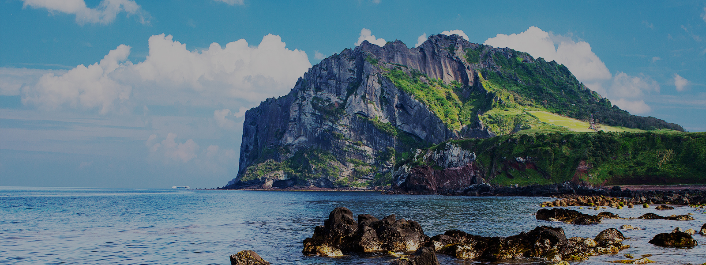
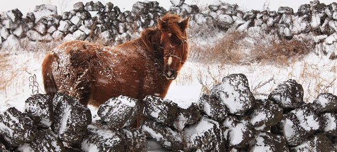

제주특별자치도


섬 전체가 하나의 거대한 관광자원인 제주도. 에메랄드빛 물빛이 인상적인 협재 해수욕장은 제주 대표 여행지며, 파도가 넘보는 주상절리와 바다 위 산책로인 용머리 해안은 제주에서만 볼 수 있는 천혜의 자연경관으로 손꼽힌다. 드라마 촬영지로 알려진 섭지코스는 꾸준한 사랑을 받고 있으며 한라봉과 흑돼지, 은갈치 등은 제주를 대표하는 음식이다.
삼다도
바람, 돌, 여자가 많다고 해서 붙여진 이름, 삼다도.
그 속에는 자연환경을 지혜롭고 억척스럽게 극복해온 제주사람들의 삶의 역사가 담겨있다.
그 속에는 자연환경을 지혜롭고 억척스럽게 극복해온 제주사람들의 삶의 역사가 담겨있다.
태풍의 길목에 자리 잡은 제주는 바람의 섬이다. 태풍 부는 날은 바다에 서면 제주바람의 위력을 실감하고도 남는다. 제주만큼 다양하고 독특한 이름의 바람을 지닌 곳이 또 있을까.
하늬바람, 높하늬바람, 높새바람, 샛바람, 마파람, 동마파람, 갈바람, 섯바람, 섯하늬바람, 양두새바람, 양바람. 제주사람들은 온갖 이름으로 찾아오는 바람과 싸우고, 맞서고, 비끼고 때로는 달래고, 이용해가며 독특한 바람의 문화를 이루어왔다. 이제 제주바람은 모아지고 가두어져 전기에너지로 태어나는 새로운 시대를 맞고 있다.

돌을 빼놓고는 제주를 상상할 수도 이야기할 수도 없다. 제주는 섬을 이루고 있는 땅과 산은 물론이고 섬을 빙 두른 해안선까지 온통 돌투성이인 화산섬이기 때문이다.
그것을 삶의 터전으로 삼아 일구며 살아야 했던 옛 제주사람들은 한 평생을 돌 속에서 돌과 더불어 살다가 돌 속으로 돌아갔다. 특히 손으로 일일이 쌓아 두른 돌담을 눈여겨보자.
집 어귀의 '올렛담', 집 울타리인 '울담', 밭을 두른 '밭담' 바다밭의 돌그물인 '원담', 무덤을 두른 '산담'이 다 돌담이다. 어찌 그것뿐이랴. 읍성 ∙ 현성 ∙ 진성 등의 성을 두른 '성담'도, 외침을 막기 위해 해안을 따라 두른 '환해장성'도 다 돌담이었다. 제주돌담속에는 제주의 삶과 문화와 역사가 고스란히 쌓여있는 것이다. 제주돌담의 총길이는 36,000천여 킬로미터로 추정된다고 한다. 이는 지구를 거의 한 바퀴 돌 수 있는 길이다. 지구본에서 조그만 점에 불과한 섬 안에 그토록 긴 돌담이 있다니 얼마나 놀라운 일인가?
제주섬은 여신의 나라다. 창조의 신 설문대, 생명의 신 삼승, 바람의 신 영등, 농경의 신 자청비, 운명의 신 가믄장아기 등 제주섬의 중요한 신들은 물론 마을을 관장하는 당신, 집안을 다스리는 가신들도 거의 여신들이다. 제주는 여신의 나라인 것이다. 제주섬에는 왜 여신이 많은 것일까? 인류사의 기원이 담긴 초기신화의 원형이 남아있기 때문이고, 척박한 환경과 거친 역사속에서도 주체적으로 꿋꿋하게 삶을 이끌어온 제주여성들의 능동적인 기질과 무관하지 않다. 바다에 나가 물질을 하는 사람도, 밭에 나가 김을 매는 사람도, 장터에 나가 장사하는 사람도, 땔감을 구하고 물을 길어 나르는 사람도 여성들어었으니 어찌 '여다의 섬'으로 비쳐지지 않을 것인가. 여다의 섬, 그 이름은 여성들이 중심되어 이어온 제주 섬의 오랜 역사를 반영하고 있는 것이다.
유네스코
제주는 2002년 생물권보전지역, 2007년 세계자연유산, 2010년 세계지질공원 인증으로 유네스코가 지정하는 자연과학분야 3개 분야를 동시에 달성한 지역이다. 또한 제주는 세계적 자연경관의 모든 테마(섬, 화산, 폭포, 해변, 국립공원, 동굴, 숲)를 모두 갖추고 있다.
영상속 제주
Tags
Category
About (4)
Tour (6)
Enjoy (6)
Food (8)